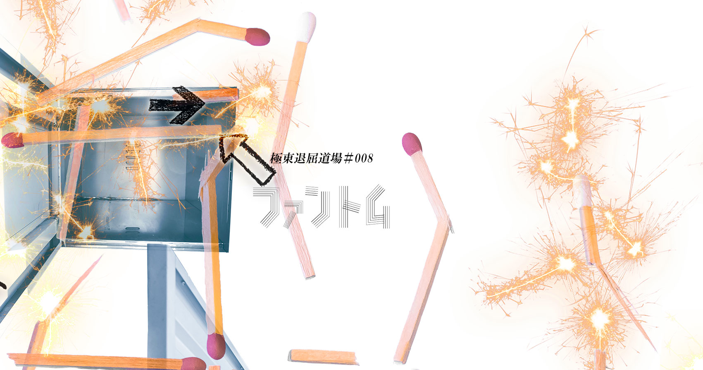
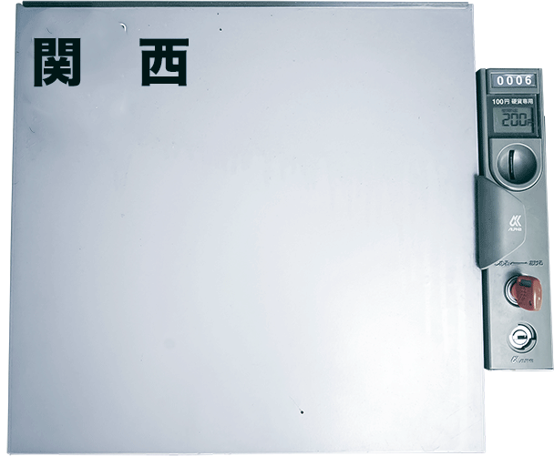
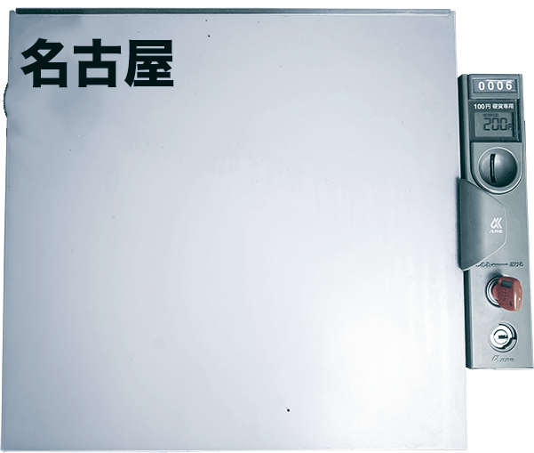

コインロッカーの中で目覚めた６人の男女。彼らは預けられた荷物なのか。 コインロッカーの扉は鍵がかかり当然、中からは開けられない。が、その扉以外の残りの五つの面には非常口のランプがともる。 ロッカーからロッカーへ。 くぐりぬけるコインロッカーの居室は、都市を構成する様々なモジュールに姿を変えていく。
アイホール提携公演
2017年11月
24日(金) 19：30
25日(土) 14：00／18：00
26日(日) 14：00
〒664-0846 兵庫県伊丹市伊丹2丁目4番1号
TEL:072-782-2000
Webサイト：http://www.aihall.com/
※受付開始／開演の40分前。 開場／開演の30分前。 ※日時指定・全席自由 ※ユース・高校生以下は要身分証明提示 ※未就学児童の御入場はご遠慮いただいております。
劇場地図
2017年12月
9日(土)15：00／18：30
10日(日)14：00
〒460-0052愛知県名古屋市天白区井口2-902
TEL:052-807-2540
Webサイト：http://naviloft1994.wixsite.com/navi-loft/
※受付開始／開演の40分前。開場／開演の30分前。 ※日時指定・全席自由 ※ユース・高校生以下は要身分証明提示 ※未就学児童の御入場はご遠慮いただいております。
劇場地図

前売 3,200円
ペア 5,500円
ユース(22歳以下)割引 2,000円
高校生以下 1,500円
２回目以降の観劇 0円（ＷＥＢ予約のみ）
※当日券は、+500円
※日時指定・全席自由
※ユース・高校生以下は要身分証明提示
※未就学児のご入場はご遠慮いただいております。
◎CoRich！
関西公演
◎極東退屈道場
TEL&FAX＝06-6841-3432(ハヤシ)
メール＝ticket@taikutsu.info
◎アイホール(関西公演のみ)
TEL＝072-782-2000(予約のみ。9～22時／火曜休館)

前売 2,500円
ペア 4,500円
ユース(22歳以下)割引 2,000円
高校生以下 1,500円
２回目以降の観劇 0円（ＷＥＢ予約のみ）
※当日券は、+500円
※日時指定・全席自由
※ユース・高校生以下は要身分証明提示
※未就学児のご入場はご遠慮いただいております。
◎CoRich！
名古屋公演
◎極東退屈道場
TEL&FAX＝06-6841-3432(ハヤシ)
メール＝ticket@taikutsu.info